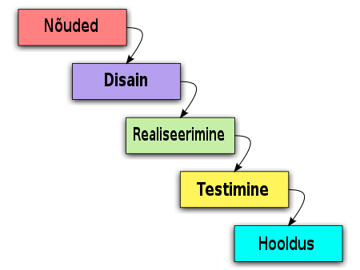
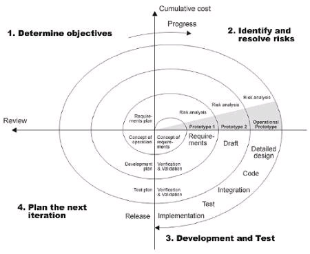

Koskmudel on üks enimteatud ja vanimaid tarkvaraarenduse meetodeid, mis on oma nimetuse saanud järjestikuse veekoskede analoogiast – vesi langeb ühelt astmelt järgmisse ega pöördu tagasi. Töös liigutakse samuti samm-sammult madalamale astmele ning kõik etapid peavad olema täielikult lõpetatud enne järgmise etapi alustamist.
Kose mudeli puhul keskendutakse projekti käigus tehtavate tööde kirjeldustele. Pannakse kirja tööd, mis tuleb tulemuse saavutamiseks teha ning määratakse nende järjestus, tähtajad, vajalikud ressursid ja tegijad.
Koskmudelit kirjeldas esmakordselt Winston W. Royce 1970. aastal. Koskmudel on järjestikune mudel, mida kasutatakse erineva tarkvara loomiseks, kus projekt kulgeb pidevalt allapoole ega pöördu tagasi samamoodi nagu koskede puhul. Niisiis tähendab kose mudel, et järgmise etapi juurde peaks liikuma alles siis, kui eelmine etapp on lõpule viidud, kuigi mõne mudeli puhul võivad mõningad variatsioonid ja muutused olla.
Koskmudelit saab kasutada, kui:
-Projekt on väike;
-Nõuded on hästi tuntud, selged ja fikseeritud;
-Toote määratlus on stabiilne;
-Tehnoloogia ja tehtavad muudatused on arusaadavad;
-Puuduvad mitmetähenduslikud nõuded;
-Kvaliteetsed allikad on vabalt kättesaadavad;
-Tarkvara on suhteliselt väikesemahuline.

Koskmudeli etapid:
Koskmudeli kitsaskohtade vältimiseks võeti 1980. a Harlan D. Mills’i poolt kasutusele iteratiivne mudel. Selles mudelis on protsess väga otsejooneline: konkreetsed etapid konkreetses järjekorras, liikumine punktist A punkti B ja tulemuseks on lõpptoode.
Iteratiivse mudeli puhul valmistatakse toote esimene variant, see vaadatakse üle, otsustatakse, kas on valitud õige tee. Algab uus iteratsioon: toodet täiendatakse, see vaadatakse üle, otsustatakse, kas on valitud õige tee. Algab uus iteratsioon… kuni toode saab valmis.
Iteratiivse mudeli puhul on kogu protsess jagatud mitmeks etapiks (siin ja edasi – iteratsioon), iga iteratsioon kestab 2-6 nädalat. Alguses valmistatakse tarkvara kriitilisem osa, sisuliselt jälgitakse seejuures samu samme, mida koskmudeli puhul. Järgmise iteratsiooni ajal täiendatakse tarkvara, luues uue funktsionaalsuse või täiendades seda, mis oli varem tehtud. Iteratsioone korrutatakse projekti lõpetamiseni. Kui tarkvara on valmis, võetakse see kasutusele. Protsessi paremaks suunamiseks võetakse arvesse riskianalüüsi tulemusi.
Millal kasutada iteratiivset mudelit?
-On olemas üldine pilt, mida tahetakse saavutada. Väiksemaid ülesandeid saab täpsustada hiljem.
-Projekt on suur. Kui on oht, et projekt venib pikaks, tasub võtta kasutusele iteratiivne mudel, kuna see lubab rakendada paralleelseid iteratsioone: minimeerib riski, et projekti lõpuks muutuvad tarkvara vajadused/nõudmised.
Prototüüp on süsteemi algne versioon, mida kasutatakse disaini võimaluste katsetamiseks ning ideede demonstreerimiseks. Prototüüpe saab kasutada erinevates arenduse faasides. Näiteks nõuete analüüsi etapil nende leidmiseks ja valideerimiseks; disaini etapil valikuvõimaluste uurimiseks ning kasutajaliidese kavandamiseks.
Kasu prototüüpimisest on: parem süsteemi kasutusmugavus, täpsem ühildumine kasutaja tegelike vajadustega; parem kvaliteet ja hooldatavus ning väiksem vaev arendamisel.
Prototüüpimise etapid on järgmised:
-Nõuete kogumine - seda tehakse üldisemal tasemel ja samas ka fikseeritakse, mida on kindlasti vaja edaspidi täpsustama hakata.
-Kiire kavandamine - keskendub nähtavale osale (sisend, väljund, vormid jms) ja selle tulemuseks on prototüüp. Klient hindab prototüüpi ja oskab selle alusel ka oma soove täpsustada.
-Järgneb iteratsioon prototüübi parandamiseks, kuni see rahuldab kasutajat. Samal ajal saab arendaja uusi teadmisi kliendi soovide kohta.
Prototüübi arendamisel on oluline, et see saaks loodud kiiresti, kasutades selleks abivahendeid (kiire prototüüpimise keeled ja tööriistad). Prototüüp ei pea sisaldama kogu funktsionaalsust - ta peab keskenduma sellele, millest ei ole hästi aru saadud; prototüübis ei pea olema vigade kontrolli ning prototüüp on suunatud funktsionaalsetele nõuetele (mitte näiteks turvalisuse probleemidele).
Prototüüpimist võib teha erineval põhimõttel - näiteks ühekordne prototüüpimine (Throw away prototyping), evolutsiooniline prototüüpimine (Evolutionary prototyping), lisanduv prototüüpimine (Incremental prototyping).
Kokkuvõtvalt, erinevalt koskmudelist ei koostata iteratiivsete arendusmudelite järgi esmalt kõikehõlmavat analüüsidokumenti, milline sisaldab muutumatuid kasutajate vajadusi ning „kirjutatakse verega alla" süsteemi tellija ja realiseerija vahel - iteratiivsed mudelid võimaldavad lihtsamalt viia sisse muudatusi süsteemi, saada kasutajatelt varajast tagasisidet, testida arendusprojekti varajases faasis süsteemi arhitektuurilise lahenduse sobivust jmt.
Prototüübi mudelit tuleks kasutada siis, kui soovitud süsteem peab lõppkasutajatega palju suhtlema. Tavaliselt on võrgusüsteemidel, veebiliidestel väga palju lõppkasutajatega suhtlemist, need sobivad kõige paremini prototüübi mudeliks.
Spiraalmudel on samuti üks iteratiivseid arendusmudeleid. Spiraalmudelit kirjeldas esimest korda Barry Boehm oma 1986 a. artiklis. 1988. a avaldas ta sarnase paberi laiemale publikule.
Protsessi kulgemist kujutab spiraal. Esimene kordus võib olla näiteks seotud süsteemi teostatavuse uurimisega, teine nõudmiste kirjeldamisega, järgmine kavandamisega jne. Mitu kordust on enamasti seotud tarkvara realiseerimisega, kus tema ehitamine toimub inkrementaalselt. Kuid kindlasti ei tohiks spiraali korduseid võrdsustada tavapäraste arendusprotsessi faasidega. Iga kordus on jaotatud 3 kuni 6 sektorisse (erinevad autorid jagavad erinevalt). Iga kordus algab lähema eesmärgi kavandamise ja riskide hindamisega ning lõppeb nö kliendiga - ehk eesmärk peab saama täidetud ja kontrollitud. Sektorite töömahukus ei pruugi olla ühesugune. Boehm'i järgi on sektoreid neli.
1. Eesmärkide seadmine (Objective setting) - määratakse selle faasi ehk korduse eesmärgid, piirangud protsessis, tulemused, juhtimisplaan, võimalikud riskid ning alternatiivsed strateegiad lähtudes riskidest.
2. Riskide hindamine ja maandamine (Risk assessment and reduction) - iga leitud riski jaoks tehakse analüüs, võetakse midagi ette riskide maandamiseks (nt risk, et nõudmised pole adekvaatsed: tehakse prototüüp)
3. Arendus ja valideerimine (Development and validation) - valitakse arendusmudel, mis lähtub hinnatud riskidest (mudel peab olema selline, mis riske vähendada aitab). Nt kui kasutajaliides on suurim risk, siis võib aidata prototüüpide tegemine.
4. Planeerimine (Planning) - projekt vaadatakse üle ja tehakse otsus, kas jätkata järgmisel kordusel, kui otsustatakse jätkata, tehakse järgmise faasi jaoks plaan.

Selle mudeli kõige olulisem erinevus teistest on riskidega arvestamine. Risk - so võimalus, et midagi saab untsu minna. Riskide realiseerumise tõttu ületatakse tähtajad ja maksumus, seepärast peab riskidega arvestama ning võtma midagi ette nende maandamiseks.
Sommerville'i järgi täpselt sellist mudelit kasutatakse harva, kuid ta on aidanud mõista iteratiivse arenduse olemust ja juhtinud tähelepanu riskidega tegelemise vajalikkusele.
Spiraalmudelit kasutavad tarkvarainsenerid ning see on eelistatud suurte, kallite ja keeruliste projektide jaoks.
Tarkvaraarenduses on V-mudel esindab arenguprotsessi, mida võib pidada koskmudeli pikenduseks. Lineaarselt allapoole liikumise asemel on protsessi etapid pärast kodeerimisfaasi ülespoole painutatud, moodustades tüüpilise V-kuju. V-mudel demonstreerib seoseid iga elutsükli faasi ja sellega seotud testimise faasi vahel. Horisontaalne ja vertikaalne telg tähistavad vastavalt aja või projekti terviklikkust (vasakult paremale) ja abstraktsiooni taset.
Esimest korda avaldati 1979. a Barry W.Boehm’i poolt.
Olemuselt koskmudel, kus suhtlemine (nõuete kogumine), modelleerimine ja realiseerimine on seostatud kvaliteedi kindlustamisega
Vasakult alla liikudes täpsustatakse nõuded kuni koodi genereerimiseni.
Edasi paremalt poolt üles liikudes, kontrollib arendusmeeskond nii koodi kui mudelite kvaliteeti.
Tegevused kulgevad jadamisi ning plussid ja miinused on samad koskmudeliga.
Projekti määratlemise etapid:
Nõuete analüüs, Süsteemi disain, Arhitektuuri disain, Mooduli disain
Kodeerimise faas
Valideerimise etapid:
Ühikute testimine, Integreerimise testimine, Süsteemi testimine, Kasutaja aktsepteerimise testimine
Millal kasutada V-mudelit?
-Kui nõue on hästi määratletud ja mitte üheselt mõistetav.
-V-mudelit tuleks kasutada väikeste ja keskmise suurusega projektide puhul, kus nõuded on selgelt määratletud ja fikseeritud.
-V-mudel tuleks valida siis, kui on olemas näidistehnilised ressursid ja olulised tehnilised teadmised.
- Viimasel ajal on seda kasutusele võtnud meditsiiniseadmete tööstuses.
Tasapisi hakkas välja kujunema uus paradigma: mida kiirem, seda parem. Mitmed inimesed jõudsid järeldusele, et mida varem saab tellija kätte tulemuse, seda parem. Nii saab kiiremini otsustada, kas see, mida tehakse, ikka vastab vajadustele, kas projekti on mõtet arendada või pole see kuluefektiivne ning tuleb aegsasti kinni panna.
Uuteks meetoditeks kujunesid: Extreme Programming, Scrum, DSDM (Dynamic System Development Method), Adaptive Software Development, Crystal, Feature-Driven Development, Pragmatic Programming jne.
11.-13.02.2001 kohtusid 17 nimetatud meetodite nimekamat kasutajat ja/või leiutajat ning leppisid kokku uue paradigma sõnastuses agiilsuse manifest:
“Tarkvara luues ning teisi tarkvara loomise juures aidates oleme leidnud selleks tööks paremaid viise. Oleme hakanud hindama:
-Inimesi ja nendevahelist suhtlust rohkem kui protsesse ja arendusvahendeid,
-Töötavat tarkvara rohkem kui kõikehõlmavat dokumentatsiooni,
-Koostööd kliendiga rohkem kui läbirääkimisi lepingute üle,
-Reageerimist muutunud oludele rohkem kui algse plaani järgimist.
Ka parempoolsetel teguritel on väärtus, kuid me hindame vasakpoolseid tegureid kõrgemalt.”
Agiilse arendamise mudeli puhul tarnitakse tellijale valmistarkvara iga etapi lõpus. Etapid on lühikesed – 1-2 nädalat (mõni meetod lubab ka 4 nädalat, mis on pigem erand). Iga päev saab projekti meeskond kokku, et kiiresti arutleda, mis möödunud päeval tehtud on, kas mõni ülesanne vajab lisatuge. Agiilse meetodi juures võib olla väga vähe rolle. Näiteks Scrumi puhul on minimaalne rollide arv kolm: tooteomanik, scrum-master ja meeskonnaliige. Iga iteratsiooni lõpus toimub tagasivaade: mida saab antud etapil õppida, mis läks hästi, mis halvasti.
Millal kasutada agiilset mudelit?
Agiilne mudel sobib, kui:
-Meeskond (tooteomanik, arendustiim) on väga tugev;
-On soov projektiga kiiresti alustada (ei vaja pikka analüüsi faasi);